D3DTEXTUREOP
Defines per-stage texture-blending operations.
typedef enum _D3DTEXTUREOP
{
D3DTOP_DISABLE = 1,
D3DTOP_SELECTARG1 = 2,
D3DTOP_SELECTARG2 = 3,
D3DTOP_MODULATE = 4,
D3DTOP_MODULATE2X = 5,
D3DTOP_MODULATE4X = 6,
D3DTOP_ADD = 7,
D3DTOP_ADDSIGNED = 8,
D3DTOP_ADDSIGNED2X = 9,
D3DTOP_SUBTRACT = 10,
D3DTOP_ADDSMOOTH = 11,
D3DTOP_BLENDDIFFUSEALPHA = 12,
D3DTOP_BLENDTEXTUREALPHA = 14,
D3DTOP_BLENDFACTORALPHA = 15,
D3DTOP_BLENDTEXTUREALPHAPM = 16,
D3DTOP_BLENDCURRENTALPHA = 13,
D3DTOP_PREMODULATE = 17,
D3DTOP_MODULATEALPHA_ADDCOLOR = 18,
D3DTOP_MODULATECOLOR_ADDALPHA = 19,
D3DTOP_MODULATEINVALPHA_ADDCOLOR = 20,
D3DTOP_MODULATEINVCOLOR_ADDALPHA = 21,
D3DTOP_DOTPRODUCT3 = 22,
D3DTOP_MULTIPLYADD = 23,
D3DTOP_LERP = 24,
D3DTOP_BUMPENVMAP = 25,
D3DTOP_BUMPENVMAPLUMINANCE = 26,
D3DTOP_MAX = 27,
D3DTOP_FORCE_DWORD = 0x7fffffff,
} D3DTEXTUREOP;
Constants
- Control members
- D3DTOP_DISABLE
- Disables output from this texture stage and all stages with a higher index. To disable texture mapping, set this as the color operation for the first texture stage (stage 0). Alpha operations cannot be disabled when color operations are enabled. Setting the alpha operation to D3DTOP_DISABLE when color blending is enabled causes undefined behavior.
- D3DTOP_SELECTARG1
- Use this texture stage's first color or alpha argument, unmodified, as the output. This operation affects the color argument when used with the D3DTSS_COLOROP texture-stage state, and the alpha argument when used with D3DTSS_ALPHAOP.
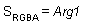
- D3DTOP_SELECTARG2
- Use this texture stage's second color or alpha argument, unmodified, as the output. This operation affects the color argument when used with the D3DTSS_COLOROP texture stage state, and the alpha argument when used with D3DTSS_ALPHAOP.
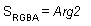
- Modulation members
- D3DTOP_MODULATE
- Multiply the components of the arguments.
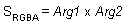
- D3DTOP_MODULATE2X
- Multiply the components of the arguments, and shift the products to the left 1 bit (effectively multiplying them by 2) for brightening.
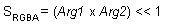
- D3DTOP_MODULATE4X
- Multiply the components of the arguments, and shift the products to the left 2 bits (effectively multiplying them by 4) for brightening.
- Addition and subtraction members
- D3DTOP_ADD
- Add the components of the arguments.
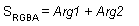
- D3DTOP_ADDSIGNED
- Add the components of the arguments with a –0.5 bias, making the effective range of values from –0.5 through 0.5.
- D3DTOP_ADDSIGNED2X
- Add the components of the arguments with a –0.5 bias, and shift the products to the left 1 bit.
- D3DTOP_SUBTRACT
- Subtract the components of the second argument from those of the first argument.
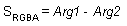
- D3DTOP_ADDSMOOTH
- Add the first and second arguments; then subtract their product from the sum.
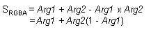
- Linear alpha blending members
- D3DTOP_BLENDDIFFUSEALPHA,D3DTOP_BLENDTEXTUREALPHA, D3DTOP_BLENDFACTORALPHA, and D3DTOP_BLENDCURRENTALPHA
- Linearly blend this texture stage, using the interpolated alpha from each vertex (D3DTOP_BLENDDIFFUSEALPHA), alpha from this stage's texture (D3DTOP_BLENDTEXTUREALPHA), a scalar alpha (D3DTOP_BLENDFACTORALPHA) set with the D3DRS_TEXTUREFACTOR render state, or the alpha taken from the previous texture stage (D3DTOP_BLENDCURRENTALPHA).
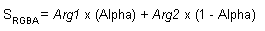
- D3DTOP_BLENDTEXTUREALPHAPM
- Linearly blend a texture stage that uses a premultiplied alpha.
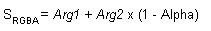
- Specular mapping members
- D3DTOP_PREMODULATE
- Modulate this texture stage with the next texture stage.
- D3DTOP_MODULATEALPHA_ADDCOLOR
- Modulate the color of the second argument, using the alpha of the first argument; then add the result to argument one. This operation is supported only for color operations (D3DTSS_COLOROP).
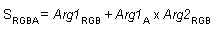
- D3DTOP_MODULATECOLOR_ADDALPHA
- Modulate the arguments; then add the alpha of the first argument. This operation is supported only for color operations (D3DTSS_COLOROP).
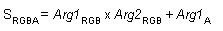
- D3DTOP_MODULATEINVALPHA_ADDCOLOR
- Similar to D3DTOP_MODULATEALPHA_ADDCOLOR, but use the inverse of the alpha of the first argument. This operation is supported only for color operations (D3DTSS_COLOROP).
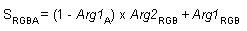
- D3DTOP_MODULATEINVCOLOR_ADDALPHA
- Similar to D3DTOP_MODULATECOLOR_ADDALPHA, but use the inverse of the color of the first argument. This operation is supported only for color operations (D3DTSS_COLOROP).
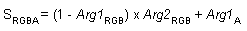
- Bump-mapping members
- D3DTOP_BUMPENVMAP
- Perform per-pixel bump mapping, using the environment map in the next texture stage, without luminance. This operation is supported only for color operations (D3DTSS_COLOROP).
- D3DTOP_BUMPENVMAPLUMINANCE
- Perform per-pixel bump mapping, using the environment map in the next texture stage, with luminance. This operation is supported only for color operations (D3DTSS_COLOROP).
- D3DTOP_DOTPRODUCT3
- Performs the function SRGBA = Arg1R×Arg2R + Arg1G×Arg2G + Arg1B×Arg2B where each component has been scaled and offset to make it signed. The result is replicated into all four (including alpha) channels. This operation is supported only for color operations (D3DTSS_COLOROP).
- Triadic texture blending members
- D3DTOP_MULTIPLYADD
- SRGBA = Arg0 + Arg1×Arg2
- D3DTOP_LERP
- SRGBA = Arg0×Arg1 + (1-Arg0)×Arg2
- Miscellaneous member
- D3DTOP_MAX
- This constant is not supported in this release.
- D3DTOP_FORCE_DWORD
- Forces this enumeration to compile to 32 bits in size. This value is not used.
Remarks
The members of this type are used when setting color or alpha operations by using the D3DTSS_COLOROP or D3DTSS_ALPHAOP values with the IDirect3DDevice8::SetTextureStageState method.
In the above formulas, SRGBA is the RGBA color produced by a texture operation, and Arg1, Arg2, and Arg3 represent the complete RGBA color of the texture arguments. Individual components of an argument are shown with subscripts. For example, the alpha component for argument 1 would be shown as Arg1A.
Requirements
Header: Declared in d3d8types.h.
See Also
D3DTEXTURESTAGESTATETYPE